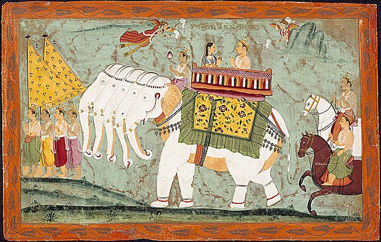
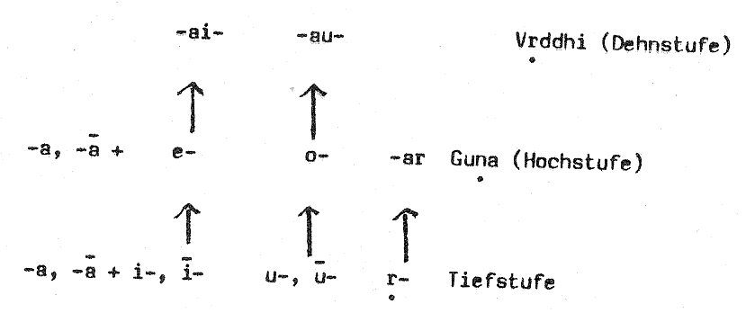

mailto:payer@payer.de
Zitierweise | cite as:
Payer, Alois <1944 - >: Sanskritkurs. -- 3. Lektion 3. -- Fassung vom 2009-03-01. -- URL: http://www.payer.de/sanskritkurs/lektion03.htm
Erstmals hier publiziert: 2008-11-17
Überarbeitungen: 2009-03-01 [Verbesserungen] ; 2009-01-27 [Verbesserungen] ; 2008-11-24 [Ergänzungen]
Anlass: Lehrveranstaltungen 1980 - 1984
©opyright: Dieser Text steht der Allgemeinheit zur Verfügung. Eine Verwertung in Publikationen, die über übliche Zitate hinausgeht, bedarf der ausdrücklichen Genehmigung des Verfassers
Dieser Text ist Teil der Abteilung Sanskrit von Tüpfli's Global Village Library
Falls Sie die diakritischen Zeichen nicht dargestellt bekommen, installieren Sie eine Schrift mit Diakritika wie z.B. Tahoma.
Die Devanāgarī-Zeichen sind in Unicode kodiert. Sie benötigen also eine Unicode-Devanāgarī-Schrift.
Auch folgende Nominalstämme, die mit einem Vokal enden, bilden den Nominativ Singular auf -s
|
Den Nominativ singular bilden ohne Endung:
|
Achtung!! daneben gibt es einsilbige feminine Wurzelnomina auf -ī, deren Nominativ singular auf -s endet: z.B. dhī f. "Gedanke" -- Nom. sg.: dhīs = धीस् ; auch lakṣmī लक्ष्मी f. "Lakṣmī" (sowie tarī = तरी f. "Boot" und tantrī = तन्त्री f. "Saite") bilden unregelmäßig den Nominativ singular auf -s: lakṣmīs = लक्ष्मीस्.
Maskulina auf -a:
Eine feste Regel für die Verteilung der Feminina auf -ā bzw. -ī lässt sich nicht aufstellen, obwohl die indischen Grammatiker eine Anzahl von Regeln geben: s. z.B. M. R. Kale: A higher Sanskrit grammar. -- Delhi, 1969. -- § 305 - 336. |
Maskulina auf -u:
-u- wird vor Vokal durch den ihm entsprechenden Halbvokal -v- ersetzt, darum -u-ī » -vī |
Die Endung des Nominativ plural (prathamā
bahuvacanam) im Maskulinum und Femininum ist -as.
Anmerkung: e ist Hochstufe (guṇa) zu i, o ist Hochstufe zu u; ay ist der Vertreter von e vor Vokalen, av ist der Vertreter von o vor Vokalen; y ist der halbvokalische Vertreter von i bzw. ī vor Vokalen. |
Einfache Vokale, die sich nicht oder nur in ihrer
Länge unterscheiden, "verschmelzen" zum entsprechenden langen Vokal:
|
z.B.
devatā + annapūrṇā » devatānnapūrṇā "Annapūrṇā ist eine Gottheit" = देवतान्नपूर्णा
(Annapūrṇā ist die Göttin der Speisen und des Kochens, sie gilt als eine Verkörperung Pārvatī's, der Gattin Śivas.)
devī + indrāṇī » devīndrāṇī "Indrāṇī ist eine Göttin" = देवीन्द्राणी
(Indrāṇī ist die Gattin des Gottes Indra.)

Abb.: Indra und Indrāṇī auf dem Elefanten Airavata, Miniatur, Rājasthān, 1670/80
[Bildquelle. Wikipedia, Public domain]
Einfache Vokale -- außer -a / -ā -- werden vor
unähnlichen Vokalen durch den ihnen entsprechenden halbvokal ersetzt:
(!! Zu dieser Regel gibt es insbesondere für Dualformen Ausnahmen !!) |
z.B.
devī + umā » devy umā "Umā ist eine / die Göttin" = देव्युमा
(Umā ist ein Name für Pārvatī, die Gattin Śivas)
-a / -ā vor unähnlichem Vokal:
|
Für diesen Sandhi gilt also folgendes Schema:

Zu dieser sog. Stammabstufung siehe später!
z.B.
śūdrā + itarā » śudretarā "Itarā ist eine Śūdrafrau" = शूद्रेतरा
| -ās wird vor allen stimmhaften Lauten durch -ā ersetzt. |
z.B.
dvijās + vaiśyāḥ » dvijā vaiśyāh "Vaiśyas sind Zweimalgeborene" = द्विजा वैश्याः
Lernen Sie folgende Wörter:
śruti f. = श्रुति: das Hören, die ewige Überlieferung (Bezeichnung für die Veden und Brāhmaṇa's)
smṛti f. = स्मृति: Vergegenwärtigung, Erinnerung, meditative Vergegenwärtigung = Achtsamkeit, Überlieferung (Gegenbegriff zu śruti. Umfasst:
smṛti ist besonders auch Bezeichnung für Dharmalehrwerke
dhenu f. = धेनु : (Milch-)kuh
paśu m. =पशु : domestiziertes Nutztier, Vieh (Kollektivum)
devatā f. = देवता : Gottheit (abstrakt und konkret)
brāhmaṇī f. = ब्राह्मणी : Brahmanin
kṣatriyā f. = क्षत्रिया : weibliche Kṣatriya
kṣatriyī f. = क्षत्रियी : Frau eines Kṣatriya
vaiṣyā f. = वैश्या : weibliche Vaiśya
śūdrā f. = शूद्रा : weibliche Śūdra
śūdrī f. / śūdrāṇī f. = शूद्री शूद्राणी : Frau eines Śūdra
devī f. = देवी : Göttin, insbes. Durgā f. = दुर्गा, die Gattin Śiva's = शिव
Abb.: Durgā = दुर्गा, Orissa (ଓଡ଼ିଶା)
[Bildquelle: Wikipedia, GNU FDLizenz]
sādhvī f. = साध्वी : fem. zu sādhu
gurvī f. = गुर्वी : fem. zu guru
asmitā f. = अस्मिता : "Ich-bin-heit", d.h. der (falsche) Glaube: Ich bin es, der sieht usw.
ānvīkṣikī f. = आन्वीक्षिकी : Philosophie (die Wissenschaft, die durch logisch korrekte Begründungen zu ihren Schlussfolgerungen kommt)
upekṣā f. = उपेक्षा : Nichtbeachtung, Gleichmut
karuṇā f. = करुणा : Mitgefühl, Mitleid
muditā f. = मुदिता : Freude, insbesondere Mitfreude (Gegensatz zu Neid)
A) Setzen Sie folgende Sätze in den Plural:
B) Bilden Sie durch Einsetzen Nominalsätze:
C) Übertragen Sie ins Femininum:
D) Übersetzen Sie ins Sanskrit:
Zu Lektion 4